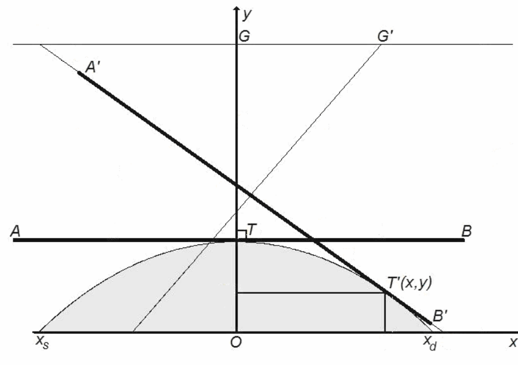
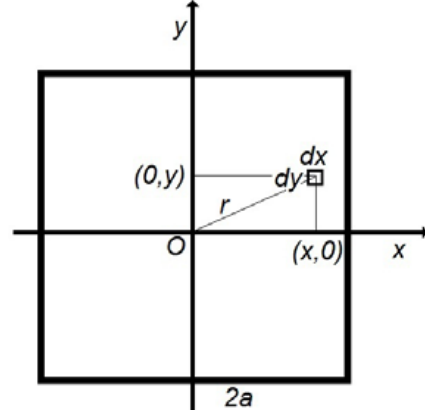
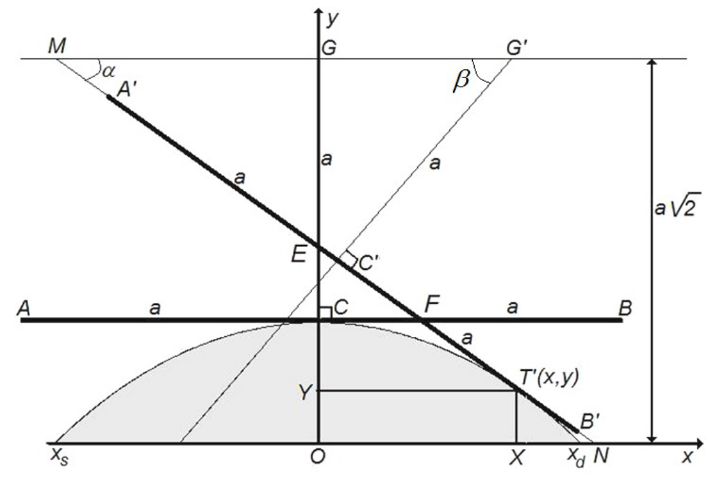
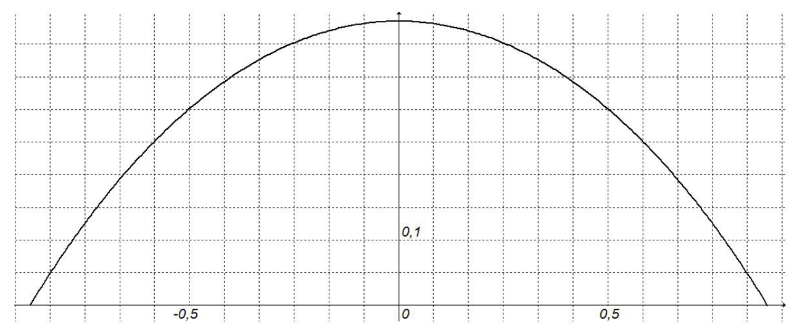

원문: Romanian Master of Physics 2013, Problema teoretică nr. 1 – Soluţie (루마니아어 원문에서 번역). 원문 해설지는 문제 본문을 먼저 싣고 이어서 풀이를 싣는다.
프레드와 바니는 두 개의 똑같은 정사각기둥(square prism)을 “바퀴”로 하는 자동차를 만들었다(그림 1). 바퀴는 도로(동일한 둔덕들이 주기적으로 이어진 도로)의 모양에 완벽하게 맞추어져 있어서, 프레드와 바니가 이런 도로를 달릴 때 자동차의 질량 중심은 연직 방향으로 움직이지 않는다. 바퀴는 도로 위에서 결코 미끄러지지 않는다고 생각하라. 자동차가 움직이는 동안 한 바퀴의 긴 모서리는 언제나 도로의 “골짜기”에 들어가며, 도로의 “봉우리”는 “바퀴”의 직사각형 면의 중앙을 지나는 선을 따라 닿는다. 자동차의 운동은 두 둔덕의 꼭대기에서 시작한다. 처음 수평 병진 속력은 $v_0$이다.
“바퀴”를 제외한 차량의 전체 무게는 $M\cdot g$이며, 두 바퀴의 축에 똑같이 나누어 걸린다. 자동차에 작용하는 힘은 중력과 수직 항력(normal reaction force)뿐이라고 가정하라.
1.a. 바퀴 하나의 자기 축에 대한 관성 모멘트(moment of inertia) $J$의 식을 구하라. 각 바퀴의 질량은 $m$이고, 단면은 한 변의 길이가 $2a$인 정사각형이다.
1.b. 다음 경우에 자동차의 운동 에너지와 바퀴의 각속도에 대한 식을 유도하라.
i. 자동차가 둔덕 꼭대기에 있을 때;
ii. 자동차의 각 바퀴가 각각 골짜기를 지날 때.
그림 2의 개략도는 기본 요철(elementary relief; 점 $x_s, T, x_d$를 지나는 곡선) 위에서 바퀴의 정사각형 단면의 아랫변이 움직이는 모습을 보여 준다.

도로는 이러한 기본 요철이 주기적으로 반복된 것이다. 단면에서 좌표계의 $Ox$축은 요철의 골짜기들을 지나고, $Oy$축은 둔덕의 꼭대기를 지난다. $AB$는 바퀴의 한 변, $T$는 바퀴와 도로의 접촉점, $G$는 처음 위치에서 축의 위치를 나타낸다. $A'B'$, $T'$, $G'$은 바퀴가 임의의 위치에 있을 때 같은 의미를 갖는다.
단면에서 보면 바퀴의 축은 항상 바퀴와 도로의 접촉점을 지나는 연직선 위에 있음을 알 수 있다.
2.a. 바퀴의 축이 항상 바퀴와 도로의 접촉점을 지나는 연직선 위에 있다는 사실에 대해 짧은 설명을 써라.
2.b. 도로 단면의 해석적 형태 $y = y(x)$를 구하라.
힌트: 함수 $y = y(x)$의 도함수 $y'(x)$는 점 $x$에서 함수 그래프의 접선의 기울기이다. 필요하다면 다음을 이용하라.
\[\int\frac{dx}{\sqrt{x^2-a^2}} = \ln\left|x+\sqrt{x^2-a^2}\right|+C\,.\]다음 표기와 그 성질 $\operatorname{ch}^2(x)-\operatorname{sh}^2(x) = 1$을 사용할 것을 권한다.
\[\operatorname{ch}(x) = \frac{e^x+e^{-x}}{2}\,;\qquad \operatorname{sh}(x) = \frac{e^x-e^{-x}}{2}\]2.c. 기본 요철 하나의 (수평 방향) 길이에 대한 식을 유도하라.
2.d. 프레드와 바니의 자동차에서 두 바퀴 축 사이의 최소 거리에 대한 식을 구하라.
2.e. 적절히 선택한 정육각기둥 모양의 바퀴를 단 자동차가, 과제 2.b에서 모양을 구한 도로 위를 바퀴의 질량 중심이 연직으로 움직이지 않으면서 달릴 수 있는지 밝혀라. 답의 근거를 제시하라.
도로 모양의 해석적 표현이 $y = k-h\cdot\operatorname{ch}(x/a)$ 꼴이라고 가정하라. 여기서 $k$와 $h$는 두 상수이다.
3.a. 문제에서 주어진 조건에서 자동차의 수평 이동 속력이 가질 수 있는 값의 범위를 구하라.
3.b. 프레드의 자동차와 어떤 장애물 사이의 완전 비탄성 충돌로 발생할 수 있는 열의 양이 장애물의 위치에 어떻게 의존하는지 밝혀라. 충돌 직후 자동차는 멈춘다. 답의 근거를 제시하라.
3.c. 충돌로 방출되는 열에 대한 식을 구하라.
1.a. 바퀴의 길이를 $L$이라 하면 바퀴 재료의 밀도는 다음과 같다.
\[\rho = \frac{m}{4a^2\cdot L}\tag{1}\]변이 $(L, dx, dy)$인 미소 기둥을 생각하면, “바퀴”의 자기 축에 대한 이 기둥의 미소 관성 모멘트는
\[dJ = \rho\iint r^2\cdot L\cdot dx\cdot dy\tag{2}\]이며, 여기서
\[r^2 = x^2+y^2\tag{3}\]
다음이 성립하므로
\[\int_{-a}^{a}\left(x^2+y^2\right)dy = \left(x^2\cdot y+\frac{y^3}{3}\right)\Bigg|_{-a}^{a} = 2a\cdot x^2+2\frac{a^3}{3}\tag{4}\]다음을 얻는다.
\[\int_{-a}^{a}\left(2a\cdot x^2+2\frac{a^3}{3}\right)dx = \left(2a\cdot\frac{x^3}{3}+2\frac{a^3}{3}\cdot x\right)\Bigg|_{-a}^{a} = \frac{4a^4}{3}+\frac{4a^4}{3} = \frac{8a^4}{3}\tag{5}\]바퀴의 관성 모멘트는 다음과 같다.
\[\begin{aligned}J &= \frac{m}{4a^2L}\cdot L\cdot\int_{-a}^{a}\left(\int_{-a}^{a}\left(x^2+y^2\right)dy\right)dx\\ &= \frac{m}{4a^2}\int_{-a}^{a}\left(\int_{-a}^{a}\left(x^2+y^2\right)dy\right)dx = \frac{m}{4a^2}\cdot\frac{8a^4}{3}\\ J &= \frac{2a^2\cdot m}{3}\end{aligned}\tag{6}\]식 (6)이 과제 1.a의 답이다.
1.b. 자동차 바퀴가 “꼭대기”나 “골짜기”에 있는 순간에는 회전축의 병진 속도 $v(t)$(이는 자동차의 병진 속도이기도 하다)와 순간 회전 반지름 $r(t)$가 서로 수직이다. 순간 각속도 $\omega(t)$와의 관계는 다음과 같다.
\[v(t) = r(t)\cdot\omega(t)\tag{7}\]i. 출발점에서 순간 회전 반지름은 $a$이므로, 이 점에서의 순간 각속도 $\omega_T$는 다음과 같다.
\[\omega_T = \frac{v_0}{a}\tag{8}\]병진 운동 에너지 $T_t$는
\[T_t = \frac{M+2m}{2}v^2\tag{9}\]이고, 같은 점에서 회전 운동 에너지 $T_r$는 다음과 같다.
\[T_r = 2\frac J2\omega^2 = J\omega^2 = \frac{2a^2\cdot m}{3}\cdot\omega^2\,.\tag{10}\]자동차의 전체 운동 에너지 $T$는
\[T = T_t+T_r = \frac{M+2m}{2}v^2+\frac{2a^2\cdot m}{3}\cdot\omega^2\tag{11}\]$v = v_0$이고 $\omega_T = \dfrac{v_0}{a}$인 처음 순간에는
\[T_0 = v_0^2\cdot\left(\frac M2+m+\frac{2m}{3}\right) = v_0^2\cdot\frac{3M+10m}{6}\tag{12}\]식 (8)과 (12)가 과제 1.b.i의 답이다.
ii. 골짜기에서 병진 속력 $v_v$는 순간 각속도와 다음 관계를 갖는다.
\[\omega_V = \frac{v_v}{a\sqrt2}\,;\quad v_v = \omega_V\cdot a\sqrt2\tag{13}\]따라서 “골짜기” 점에서 전체 운동 에너지는 다음과 같다.
\[\begin{aligned}T_v &= \left(\frac{(M+2m)\cdot2a^2}{2}+\frac{2a^2\cdot m}{3}\right)\cdot\omega_v^2\\ &= \left(M+2m+\frac{2\cdot m}{3}\right)\cdot\omega_v^2\cdot a^2 = \omega_v^2\cdot a^2\cdot\frac{3M+8m}{3}\end{aligned}\tag{14}\]문제의 조건에 따라 질량 중심의 연직 이동이 없으므로 자동차의 퍼텐셜 에너지는 변하지 않는다. 외력이 일을 하지 않으므로 자동차의 전체 운동 에너지는 보존되어야 한다.
운동 에너지가 보존되므로, 식 (12)와 (14)로부터
\[\left(\frac{3M+8\cdot m}{3}\right)\cdot\omega_V^2\cdot a^2 = v_0^2\cdot\left(\frac{3M+10m}{6}\right)\tag{15}\]따라서
\[\omega_V = \frac{v_0}{a}\cdot\sqrt{\frac{3M+10m}{6M+16m}}\tag{16}\]결과를 분석하면 다음과 같은 논평을 할 수 있다.
• $M \gg m$이면, 식 (16)으로부터
\[\omega_v = \frac{v_0}{a\sqrt2}\,;\quad v_v = v_0\tag{17}\]이 결과는 자연스럽다. 바퀴가 무시할 만하면 병진 속력은 일정하다.
• $M \ll m$이면, 식 (16)으로부터
\[\omega_v = \frac{v_0}{a}\cdot\sqrt{\frac58}\tag{18}\]• $M = m$이면, 식 (16)으로부터
\[\omega_v = \frac{v_0}{a}\cdot\sqrt{\frac{13}{22}}\tag{19}\]식 (12)와 (16)이 과제 1.b.ii의 답이다.
2.a. 만약 중력이 접촉점에 대해 돌림힘을 가진다면, 중력 퍼텐셜 에너지가 운동 에너지로 또는 그 반대로 전환될 것이며, 이는 퍼텐셜 에너지가 일정하다는 가정에 모순된다.
2.b. 그림 4는 기본 요철, 즉 점 $x_s, T, x_d$를 지나는 곡선 위에서 바퀴의 정사각형 단면의 아랫변이 움직이는 모습을 보여 준다.
힌트를 이용하면
\[\operatorname{tg}\alpha = -y'(x)\tag{20}\]다음이 성립하므로
\[\cos\alpha = \frac{1}{\sqrt{1+\operatorname{tg}^2\alpha}}\tag{21}\]다음을 얻고
\[\cos\alpha = \frac{1}{\sqrt{1+y'^2}}\tag{22}\]따라서
\[G'T' = \frac{a}{\cos\alpha} = a\cdot\sqrt{1+y'^2}\tag{23}\]
점 $G'$과 $T'$이 같은 연직선 위에 있다는 조건은 다음과 같다.
\[y+a\cdot\sqrt{1+y'^2} = a\sqrt2\tag{24}\]또는
\[y' = \sqrt{\left(\sqrt2-\frac ya\right)^2-1}\tag{25}\]이로부터
\[\frac{dy}{\sqrt{\left(\sqrt2-\dfrac ya\right)^2-1}} = \pm dx\tag{26}\]식 (26)을 적분하면 다음을 얻는다.
\[\pm\frac xa+\wp = \ln\left|\left(\sqrt2-y/a\right)+\sqrt{\left(\sqrt2-y/a\right)^2-1}\right|\tag{27}\]다음 조건에서
\[x = 0\,,\quad y = a\cdot\left(\sqrt2-1\right),\tag{28}\]적분 상수는 0이다.
\[\wp = 0\tag{29}\]또한
\[y < a\left(\sqrt2-1\right)\tag{30}\]이므로 절댓값 안의 양이 양수라는 결론에 이르고, 식 (27)은 차례로 다음과 같이 다시 쓸 수 있다.
\[\left(\sqrt2-y/a\right)+\sqrt{\left(\sqrt2-y/a\right)^2-1} = e^{\pm\frac xa}\tag{31}\] \[\left(e^{\pm\frac xa}-\left(\sqrt2-y/a\right)\right)^2 = \left(\sqrt2-y/a\right)^2-1\tag{32}\] \[\frac{e^{\pm\frac{2x}{a}}+1}{e^{\pm\frac xa}} = 2\left(\sqrt2-y/a\right);\quad \frac{e^{\pm\frac{2x}{a}}+e^{\mp\frac{2x}{a}}}{2} = \sqrt2-\frac ya\tag{33}\]또는
\[y = a\left(\sqrt2-\operatorname{ch}(x/a)\right)\tag{34}\]도로의 “기본 요철”을 나타내는 함수의 그래프는 그림 5와 같다.

식 (34)가 과제 2.b의 답이다.
2.c. 도로의 요철을 기술하는 함수의 꼴 (31)로부터, $y = 0$일 때
\[\pm x = a\cdot\ln\left(\sqrt2+1\right)\tag{35}\]따라서 기본 요철 함수의 양 끝점은
\[\begin{cases}x_s = -a\cdot\ln\left(\sqrt2+1\right)\\ x_d = \phantom{-}a\cdot\ln\left(\sqrt2+1\right)\end{cases}\tag{36}\]$2d$로 나타낸 도로 요소 하나의 수평 길이는 다음과 같다.
\[2d = \left|x_d-x_s\right| = 2a\cdot\ln\left(\sqrt2+1\right)\tag{37}\]식 (37)이 과제 2.c의 답이다.
2.d. 다음이 성립하므로
\[2a\cdot\ln\left(\sqrt2+1\right) \cong 1{,}76a < 2\sqrt2a\tag{38}\]두 바퀴가 연속한 두 도로 요소 위에 있다면 굴러갈 수 없다.
축 사이의 최소 거리 $d_{min}$은, 하나의 요소를 사이에 두고 떨어진 두 도로 요소 사이의 거리만큼은 되어야 한다. 즉,
\[d_{min} = 4a\cdot\ln\left(\sqrt2+1\right)\tag{39}\]식 (39)가 과제 2.d의 답이다.
2.e. 도로 모양을 주는 함수의 식에 따라
\[y' = -\operatorname{sh}(x/a)\tag{40}\]그 결과
\[\begin{cases}y'(x_d) = -1\\ y'(x_s) = 1\end{cases}\tag{41}\]이 결과는 연속한 두 “언덕”에서 요철에 그은 접선 사이의 각이 $\dfrac\pi2$임을 뜻한다. 이는 두 기본 요철 사이의 골짜기에 정사각형이 정확히 “들어맞고” 하나의 요철에서 다음 요철로 넘어가는 것을 보장하지만, 단면에서 육각기둥의 이웃한 변 사이의 각은 $\dfrac{2\pi}{3}$이므로, 크기가 어떻든 육각형 단면을 가진 바퀴는 사용할 수 없다.
위의 설명이 과제 2.e의 답이다.
3.a. 무게중심의 이동 속도는 다음 관계를 만족한다.
\[v_{G'} = \frac{d}{dt}(GG') = \frac{dx}{dt}\tag{42}\]이동하는 동안 회전 반지름 $GC$는 다음 각만큼 회전하여 $G'C'$의 위치에 이른다.
\[\beta = \frac\pi2-\alpha\tag{43}\]문제의 조건에 따라
\[\alpha = \operatorname{arctg}\left(-y'(x)\right)\tag{44}\]이므로 바퀴의 각속도는 다음과 같다.
\[\omega = \frac{d\beta}{dt} = -\frac{d\alpha}{dt} = -\frac{d}{dt}\left[\operatorname{arctg}(-y')\right] = \frac{d}{dt}\left[\operatorname{arctg}(y')\right]\tag{45}\] \[\omega = -\frac{d}{dt}\left(\operatorname{arctg}\left(\operatorname{sh}(x/a)\right)\right) = -\frac{\left(\operatorname{ch}(x/a)\right)}{1+\left(\operatorname{sh}(x/a)\right)^2}\cdot\frac1a\cdot\frac{dx}{dt}\tag{46}\] \[\omega = -\frac{1}{a\cdot\operatorname{ch}(x/a)}\cdot\frac{dx}{dt}\tag{47}\]바퀴가 언덕에서 골짜기로 요철을 따라 움직일 때
\[0 < x < d = a\cdot\ln\left(\sqrt2-1\right)\tag{48}\]이고, 이에 대응하여
\[1 < \operatorname{ch}(x/a) < \sqrt2\tag{49}\]“바퀴”의 각속도와 병진 속도 사이에는 다음 관계가 있다.
\[\omega = -\frac{1}{a\cdot\operatorname{ch}(x/a)}\cdot v_{G'}\tag{50}\]자동차가 움직이는 동안 그 퍼텐셜 에너지는 변하지 않는다. 자동차의 운동 에너지 $T$는 병진 운동 에너지 (9) $T_t = (M+2m)\cdot v_{G'}^2/2$와 회전 운동 에너지 (10) $T_r = J\cdot\omega^2$의 합이다. 따라서
\[T = T_t+T_r = \frac{(M+2m)}{2}v_{G'}^2+J\cdot\omega^2\tag{51}\] \[T = \frac{(M+2m)}{2}v_{G'}^2+\frac{2a^2\cdot m}{3}\cdot\left(\frac{1}{a\cdot\operatorname{ch}(x/a)}\cdot v_{G'}\right)^2\tag{52}\] \[T = v_{G'}^2\cdot\left(\frac{(M+2m)}{2}+\frac23m\cdot\frac{1}{\operatorname{ch}^2(x/a)}\right)\tag{53}\]$x = 0$인 처음 순간에는
\[v_{G'}(0) = v_0\,;\quad \operatorname{ch}(x/a) = 1\tag{54}\] \[T_0 = v_0^2\cdot\left(\frac M2+\frac{5m}{3}\right)\tag{55}\]이는 식 (12)를 확인해 준다.
일반적으로, 자동차의 병진 속력의 위치 의존성은 다음과 같다.
\[v_{G'} = \frac{v_0\cdot\sqrt{\left(\dfrac M2+\dfrac{5m}{3}\right)}}{\sqrt{\dfrac{(M+2m)}{2}+\dfrac23m\cdot\dfrac{1}{\operatorname{ch}^2(x/a)}}}\tag{56}\]언덕에서 골짜기로 이동할 때 $0 < x < a\cdot\ln\left(\sqrt2+1\right)$이고, 이에 대응하여 $1 < \operatorname{ch}\dfrac xa < \sqrt2$이다.
고려하는 구간에서 $\operatorname{ch}\dfrac xa$는 단조 증가 함수이므로(이 구간에서 그 도함수 $\operatorname{sh}\dfrac xa$는 양수이다), 극값은 구간의 양 끝에서의 값이다.
\[\frac12 < \frac{1}{\operatorname{ch}^2(x/a)} < 1\tag{57}\]이 속력의 극값은 각각 처음 속력 $v_0$과 “골짜기”에서의 속력이다.
\[v_{G'}(d) = \frac{v_0\cdot\sqrt{3M+10m}}{\sqrt{3M+8m}} > v_0\tag{58}\]위의 설명과 식 (58)이 과제 3.a의 답이다.
3.b. 발생하는 열의 양은 충돌 지점의 위치에 의존하지 않는다. 이 과정에서 자동차의 (일정한) 운동 에너지 전부가 열로 바뀌기 때문이다.
위의 설명이 과제 3.b의 답이다.
3.c. 방출되는 열의 양 $Q$는 자동차의 처음 전체 운동 에너지와 같다.
\[Q = v_0^2\cdot\left(\frac{3M+10m}{6}\right)\tag{59}\]식 (59)가 과제 3.c의 답이다.
© 풀이 제안: Prof. Dr. Delia DAVIDESCU, Conf. univ. dr. Adrian DAFINEI